組み立て式で持ち運びに便利な捕獲器
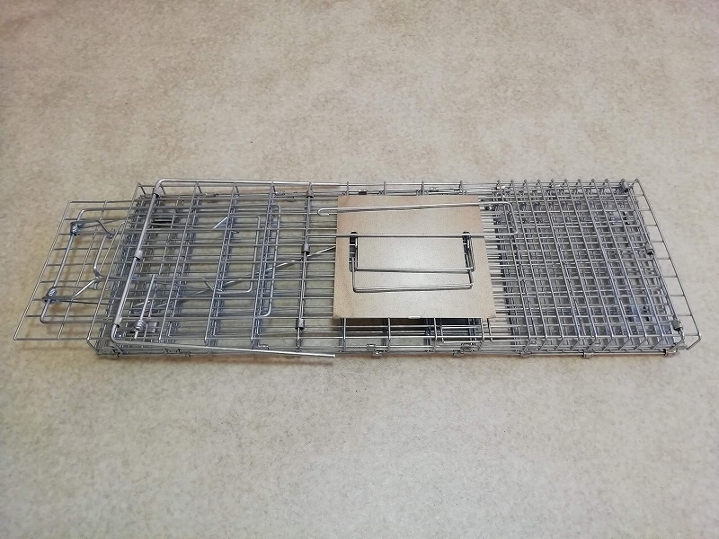
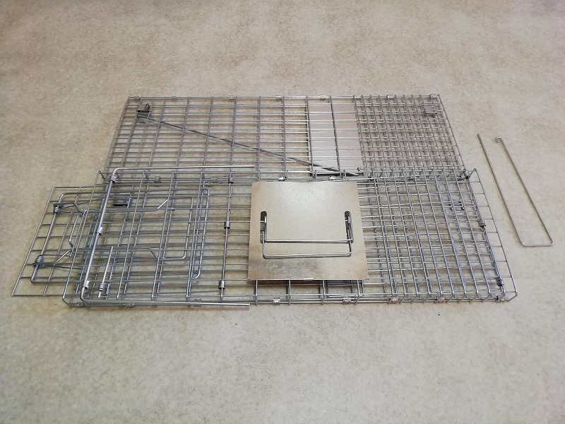
組み立てた感じは写真の通り。
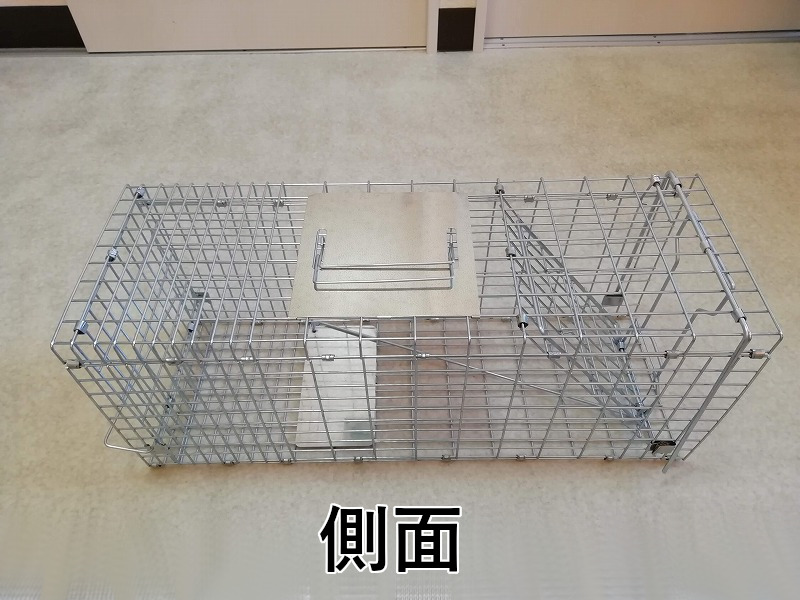
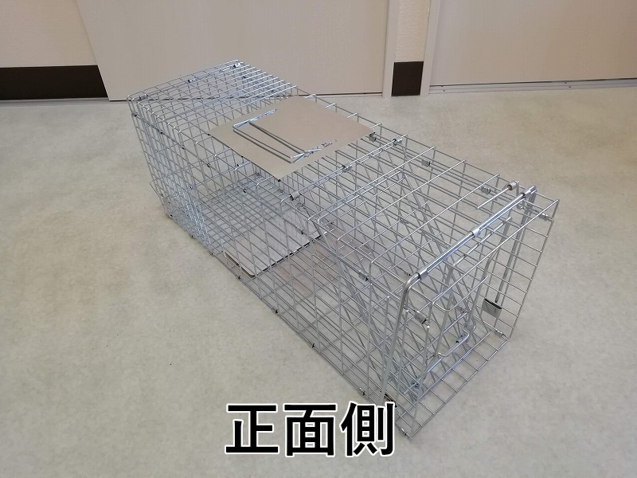
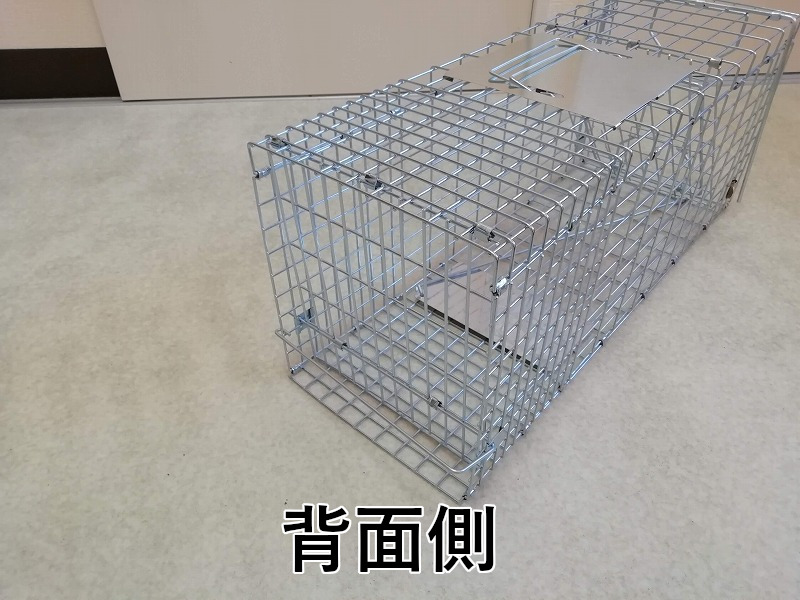
折りたためるため、収納性に優れています。
※ 立体構造が被ると分かりにくくなるので、黒いタオルをあてています。
組み立てる際は下の写真の通り、小さな金具の穴を通し…
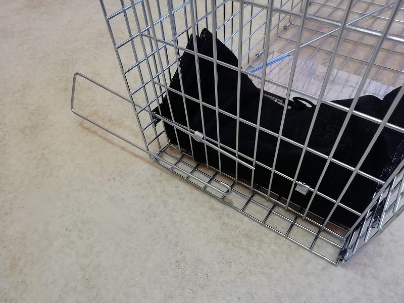
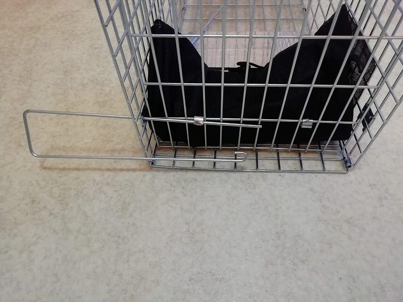
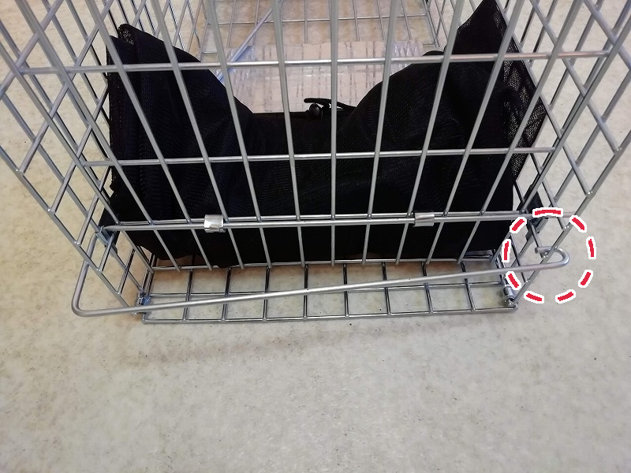
フックでロックする必要があります。
ところが下の写真の様に、軸がチューブ管に入っていないと・・・
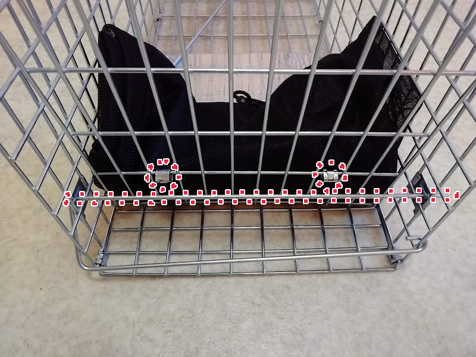
あるいはフックロックが十分でないと・・・
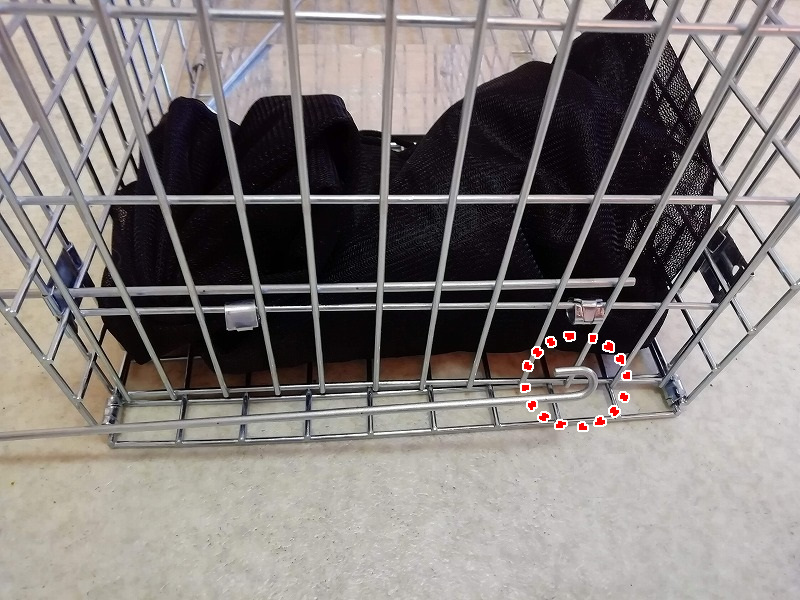
背面の扉が開いてしまいます。
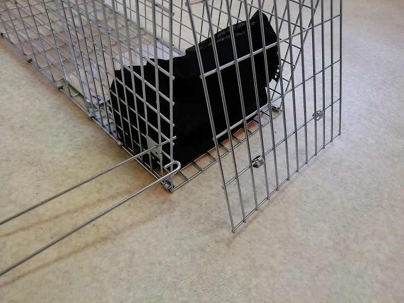
そして猫が脱走する事に…
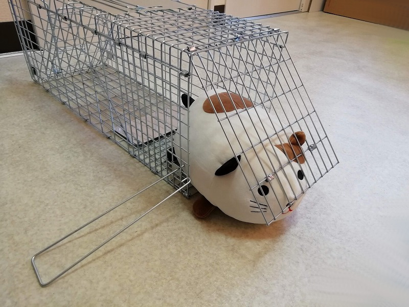
要するに！！
組み立てたときに、しっかり背面が組み立てられているか確認して下さい！
しっかり組み立てたつもりでも、実は十分ではなかったという事もありえるので、
できれば以下の写真の様に、針金で補強して下さい！
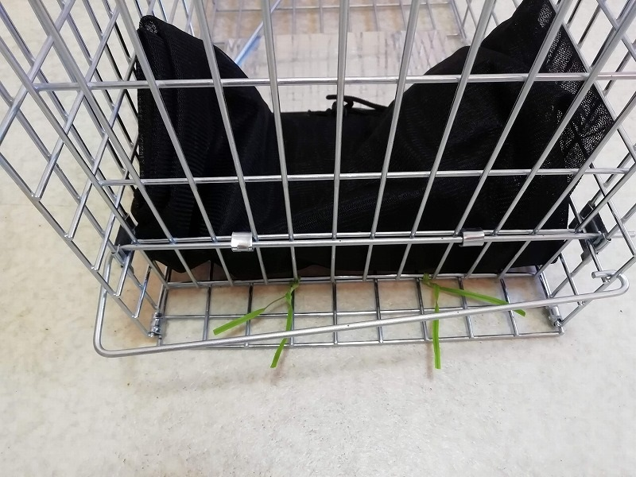
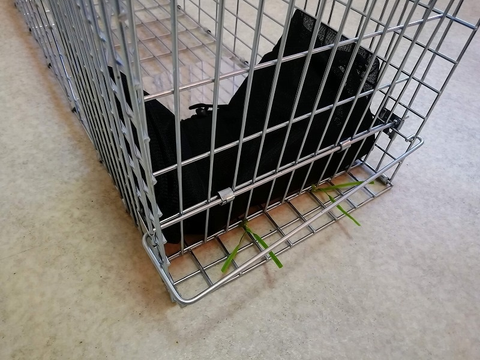
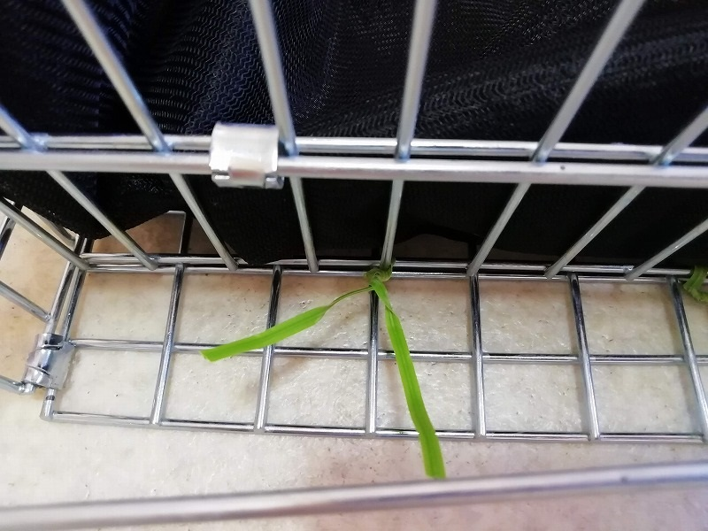
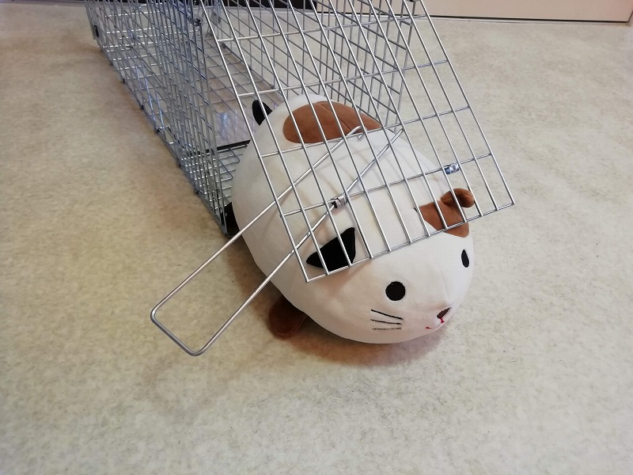
／しめしめ＼
おわり